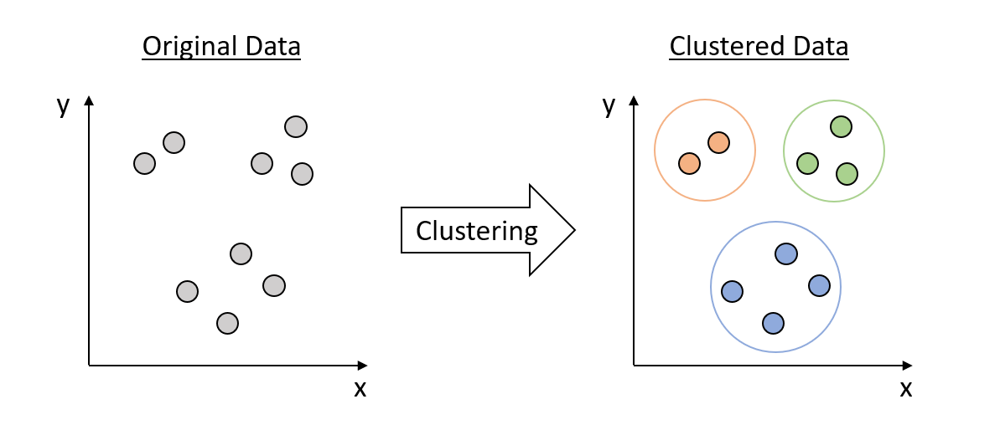

Work
Some of my publications include image processing related work, clustering related work and big data related work.
In future, I would like to keep working on the field of Artificial Intelligence and Mechine Learning, by developing and applying new algorithms to analyze the data. This way I wuld be able to contribute to the beterment of the human society.